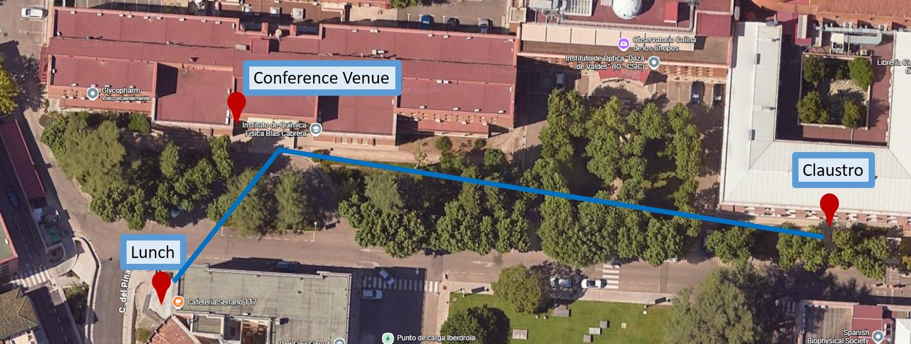
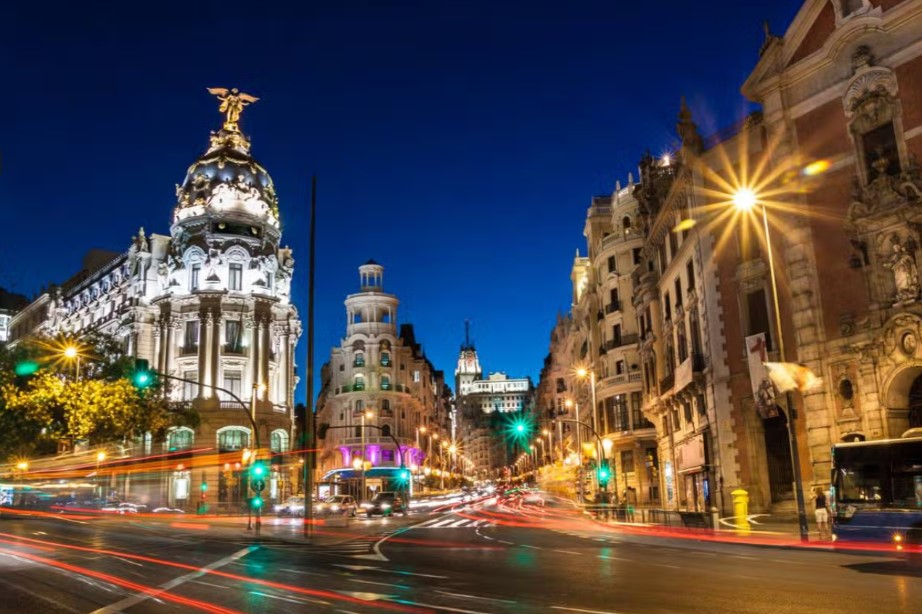

Venue
Conference Venue
The Iberian Prion Meeting 2026 will take place in one of the most iconic scientific spaces in Madrid: the Assembly Hall of the Blas Cabrera (former Rocasolano) Institute of Physical Chemistry . This building is part of a campus with a remarkable history that shaped modern science in Spain.
The story begins in 1932, when the Rockefeller Building was inaugurated thanks to the support of the Rockefeller Foundation. At that time, it housed the National Institute of Physics and Chemistry, a pioneering centre led by scientists such as Blas Cabrera and Enrique Moles. With state‑of‑the‑art laboratories and strong international connections, it quickly became one of the most advanced research institutes in Europe.
After the creation of the Spanish National Research Council (CSIC) in the 1940s, part of this scientific legacy evolved into the Rocasolano Institute, formally established in 1946 and named after Antonio de Gregorio Rocasolano, a key figure in the development of physical chemistry in Spain. Since then, the institute has been home to leading research in spectroscopy, molecular physics, structural chemistry, and biophysical sciences.
Today, the Blas Cabrera Istitute continues to combine tradition and innovation, hosting cutting‑edge research while preserving the spirit of scientific curiosity that defined its origins. Its historic Assembly Hall—where the Iberian Prion Meeting 2026 will be held—has witnessed decades of lectures, discoveries, and scientific gatherings.
Celebrating the meeting here connects our community with a unique scientific heritage and offers an inspiring setting to discuss the latest advances in prion biology.

Video: History of the venue.
You can watch a short video about the history of the building here (audio in Spanish): ▶ Watch the history video
Registration, poster sessions and coffee breaks
While the scientific sessions of the Iberian Prion Meeting 2026 will take place in the Assembly Hall of the Rocasolano Institute, several key activities will be hosted in another historic building just a few steps away.
Registration, poster sessions, and coffee breaks will be held in the Claustro, a beautiful cloister located within the Miguel A. Catalán Physics Centre, approximately 50 metres from the main hall. This space offers a quiet, open-air atmosphere ideal for informal discussions, networking, and scientific exchange.
The Claustro is part of the CSIC’s central campus and reflects the architectural heritage of early 20th-century Spanish science. Its covered walkways and central garden provide a unique setting for poster presentations and social interaction throughout the meeting.

To reach the Claustro from the Rocasolano Institute (Assembly Hall), simply walk across the internal campus path toward the Miguel A. Catalán Physics Centre, located just beyond the Blas Cabrera Institute. The route is clearly signposted and takes less than two minutes on foot.
📍 View campus map

How to get there. Travel Information
Nearest airport
Adolfo Suárez Madrid–Barajas Airport (MAD) is the closest international airport, located approximately 12–15 km from Serrano 119. It offers extensive connections to Europe and major intercontinental hubs. Typical travel time to the venue ranges from 20 to 30 minutes depending on traffic and transport mode.
PUBLIC TRANSPORT OPTIONS
Serrano 119 is well connected to Madrid’s public transport network:
Metro
Line 6 – República Argentina (approx. 5–7 minutes on foot) Direct connection from Nuevos Ministerios (one stop).
Line 9 – Concha Espina (approx. 10 minutes on foot)
Line 10 – Gregorio Marañón (approx. 12 minutes on foot)
Bus lines (EMT Madrid)
Several lines stop directly along Calle Serrano, within 1–3 minutes of the venue: 5, 14, 27, 43, 120, 147, 150
Train (Cercanías Renfe)
The nearest station is Nuevos Ministerios (C1, C2, C3, C4, C7, C8, C10), about 15 minutes on foot or a short metro/bus ride. This station also connects directly with the airport (Line C1).
Taxi and ride‑hailing services
Madrid offers reliable and widely available transport services:
Official taxis
A typical ride from the airport to Serrano 119 takes 20–25 minutes. The airport has a fixed fare to the city center.
Ride‑hailing apps
Uber, Cabify, and Bolt operate throughout Madrid. Pick‑up and drop‑off at Serrano 119 are straightforward due to wide sidewalks and clear access points.
Recommended routes
From the airport (MAD): Taxi / Ride‑hailing: fastest and most direct option (20–25 min).
Metro:
Line 8 → Nuevos Ministerios
Transfer to Line 6 → República Argentina (1 stop)
Short walk to Serrano 119
Train (Cercanías):
Line C1 → Nuevos Ministerios
Metro Line 6 → República Argentina
From Atocha train station: Metro:
Line 1 → Cuatro Caminos
Line 6 → República Argentina
Bus:
Lines 14 or 27 (direct routes along Paseo de la Castellana and Serrano)

Visiting Madrid
Madrid, the vibrant capital of Spain, offers a rich blend of history, culture, and modernity. Visitors can explore world-renowned museums like the Prado and Reina Sofía, stroll through the elegant Retiro Park, and admire architectural gems such as the Royal Palace and Puerta de Alcalá. The city’s dynamic neighborhoods, lively plazas, and culinary scene make it a top European destination. Madrid’s unique energy and deep historical roots captivate travelers from around the world.
Places not to be missed
Here are some of the places not to be missed in Madrid, each offering a unique glimpse into the city’s rich history, culture, and charm:
- The Prado Museum – One of the world’s greatest art galleries, home to masterpieces by Velázquez, Goya, and El Bosco.
- Reina Sofía Museum - Spain’s national museum of modern art, featuring Picasso’s iconic Guernica.
- Thyssen-Bornemisza Museum - Completes the “Golden Triangle of Art” with works from Van Gogh, Monet, and Hopper.
- Royal Palace of Madrid – A grand architectural marvel and official residence of the Spanish monarchy.
- Puerta del Sol – The symbolic heart of Madrid and the starting point of Spain’s radial road system.
- Plaza Mayor – A historic square surrounded by arcades, perfect for strolling and enjoying traditional tapas.
- Retiro Park – A lush green oasis with sculptures, fountains, and the stunning Crystal Palace.
- Gran Vía – Madrid’s vibrant avenue lined with theaters, shops, and iconic buildings.
- Temple of Debod – An ancient Egyptian temple gifted to Spain, offering sunset views over the city.
- Cibeles Palace and Fountain – A majestic civic building and one of Madrid’s most photographed landmarks.
- Puerta de Alcalá – A neoclassical triumphal arch and symbol of Madrid’s imperial past.
- Plaza de España & Torre de Madrid – A spacious plaza with monuments and views of the city’s skyline.
Beyond Madrid
Madrid’s privileged location makes it an ideal base for exploring some of Spain’s most remarkable historic cities. All of them are easily accessible by train—some in under 30 minutes—offering perfect cultural getaways before or after the congress.
Alcalá de Henares - A UNESCO World Heritage city known for its historic university and as the birthplace of Miguel de Cervantes. Its academic atmosphere and medieval streets make it a cultural treasure. Distance from Madrid: ~35–41 km Train time: 29–39 minutes on Cercanías trains
Segovia - Famous for its spectacular Roman aqueduct, fairy‑tale Alcázar, and Gothic cathedral. A compact and unforgettable historic city. Distance from Madrid: ~90–97 km Train time: 28–35 minutes on high‑speed AVE/Avlo trains
Toledo - The “City of Three Cultures,” known for its cathedral, medieval streets, and panoramic views over the Tajo River. Distance from Madrid: ~73–87 km Train time: 33 minutes on AVE trains
Aranjuez - Renowned for its Royal Palace and vast historic gardens, Aranjuez offers a peaceful cultural escape with UNESCO recognition. Distance from Madrid: ~47–50 km Train time: 45–55 minutes on Cercanías or regional trains
San Lorenzo de El Escorial - Home to the monumental Royal Monastery of El Escorial, a symbol of Spanish history set in the Sierra de Guadarrama foothills. Distance from Madrid: ~49–58 km Train time: 55–65 minutes on regional trains
Ávila - A walled medieval city famous for its perfectly preserved ramparts, Romanesque churches, and spiritual heritage linked to Saint Teresa. Distance from Madrid: ~109–117 km Train time: 1h 20–1h 40 on regional or Media Distancia trains
We hope you enjoy your visit!